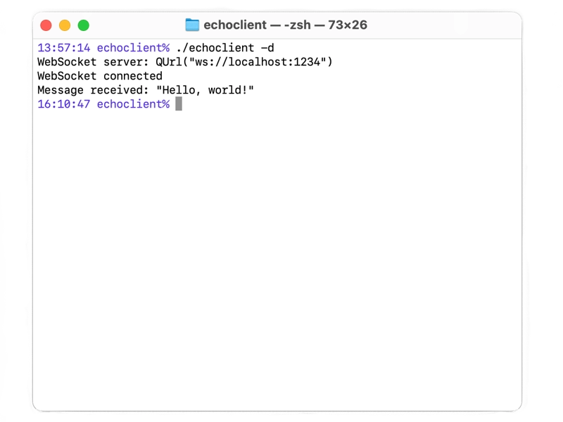

WebSocket Echo Client
Show how to write a simple WebSocket client application.
The Echo Client shows how to use the WebSocket API to send a message to a server and process whatever response the server returns - in this case, simply reporting the response.
The client by default opens a WebSocket connection to a server listening on local port 1234. When the connection attempt is successful, the client will send a message to the server and print out whatever response the server sends. The client then closes the connection.

For the sake of illustration, we use the WebSocket Echo Server, whose reply is simply the message that was sent.
See also WebSocket Echo Server.